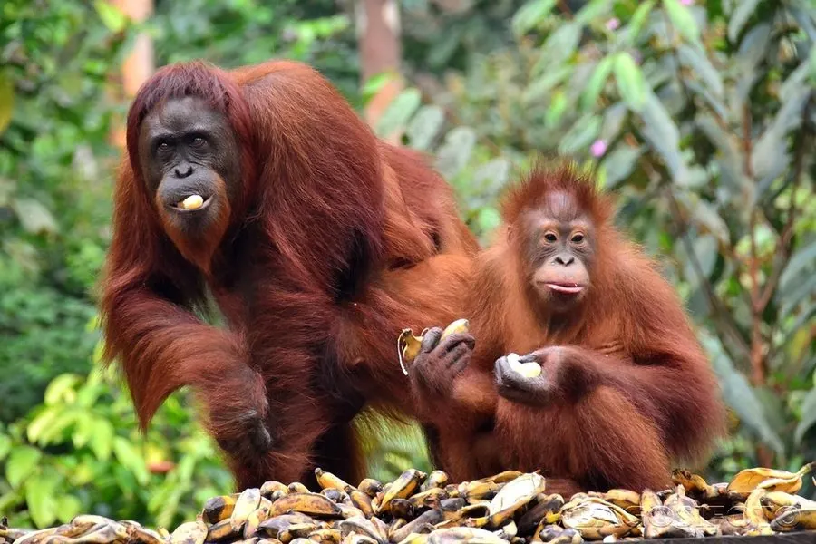

哺乳动物 · 动物界
婆罗洲猩猩 Pongo pygmaeus

仅分布于婆罗洲的亚洲猩猩，雄性脸侧有宽大肉垫，臂展超过 2 米，以果实为生，因雨林砍伐被列为极危。
- 分类
- 门脊索动物门纲哺乳纲目灵长目科人科属猩猩属
- 栖息环境
- 热带低地雨林与泥炭沼泽森林，几乎终生在树上活动
- 地理分布
- 东南亚婆罗洲岛，包括印度尼西亚加里曼丹和马来西亚沙捞越、沙巴
- 保护级别
- IUCN 极危（CR）；CITES 附录Ⅰ
物种志
婆罗洲猩猩体长 1.2–1.5 米，雄性体重 50–90 kg，雌性约 30–50 kg，臂展可超过 2 米，是亚洲体型最大的灵长类。它全身覆红棕色长毛，面部裸露呈深色，雄性成年后脸颊两侧长出宽大的肉质颊垫，喉部有喉囊，体形明显大于雌性。
婆罗洲猩猩分布在婆罗洲岛的热带雨林，是亚洲唯一的大猿，栖息于低地雨林和泥炭沼泽森林，几乎终生在树上活动。它以果实为主食，也吃树叶、嫩芽、树皮、花和昆虫，每天会搭建新的树巢睡觉，雨季还会用大树叶充当雨伞。成年雄性与雌性多单独活动，领地意识不强，但繁殖季雄性会发出长鸣。雌性妊娠期约 8–9 个月，每胎 1 仔，幼仔跟随母亲生活 6–7 年，是哺乳动物中育幼期最长的种类之一。由于油棕种植和森林砍伐，婆罗洲猩猩被列为极危。
形态与习性
- 食性果实为主，也吃树叶、嫩芽、树皮与昆虫
- 体长1.2–1.5 m
- 体重雄性 50–90 kg，雌性约 30–50 kg
- 臂展可超过 2 m，明显大于身高
- 寿命野外约 35–40 年
- 繁殖妊娠期约 8–9 个月，每胎 1 仔，育幼 6–7 年
趣味知识
- 婆罗洲猩猩每晚都会在树上搭建新的巢，有时还会用大树叶挡雨。
- 成年雄性脸颊两侧长有宽大的肉质颊垫，是地位的象征。
- 它的臂展可超过 2 米，比身高长得多，适合在树冠间摆荡。
- 幼仔要跟随母亲生活 6–7 年，是育幼期最长的动物之一。